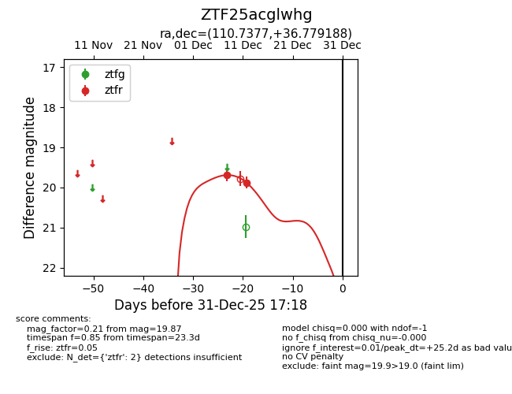
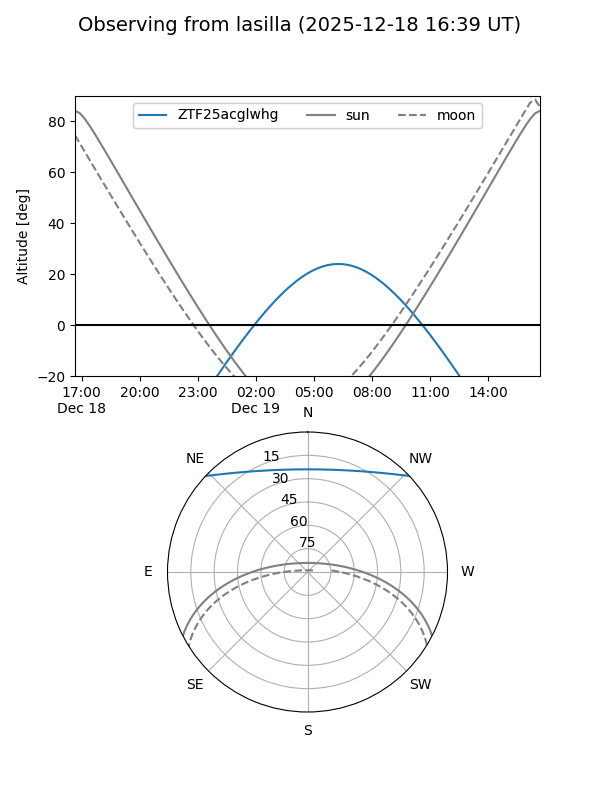

ZTF25acglwhg
Target ZTF25acglwhg at 2025-12-18 11:18
Aliases and brokers:
FINK: fink-portal.org/ZTF25acglwhg
Lasair: lasair-ztf.lsst.ac.uk/objects/ZTF25acglwhg
ALeRCE: alerce.online/object/ZTF25acglwhg
alt names
ZTF25acglwhg (ztf,fink_ztf)
Coordinates:
equatorial (ra, dec) = 110.7377,+36.77919
equatorial (HMS+DMS) = 07:22:57.04,+36:46:45.08
galactic (l, b) = (181.6100,+21.75997)
Photometry
last ztfr=19.87
2 ztfr detections
Lightcurve

Visibility


Additional plots